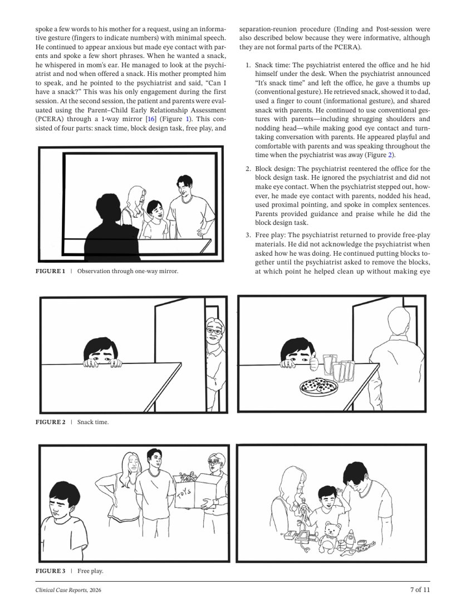
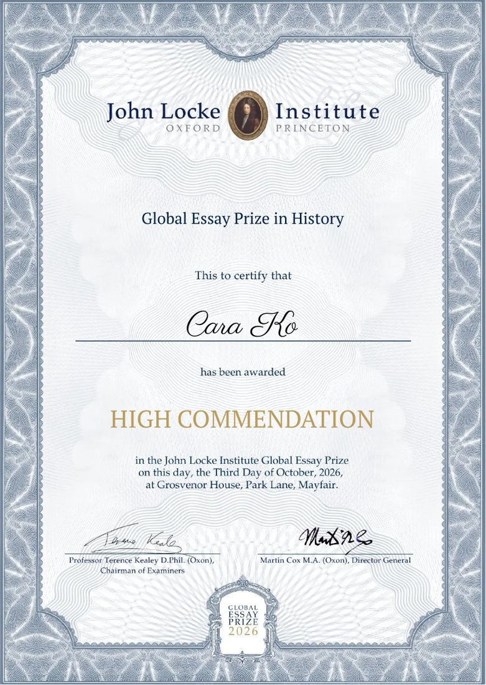
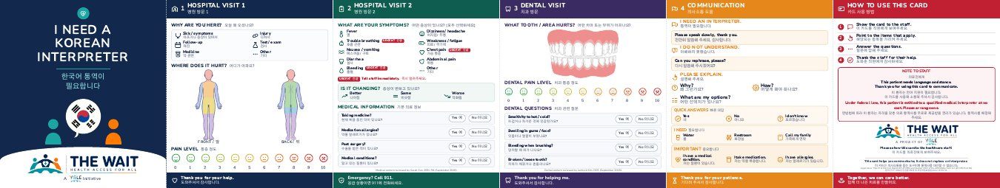

Cara Ko
Work exhibited at BRIC in Brooklyn, used in clinical presentations at the American Academy of Child and Adolescent Psychiatry Annual Meeting, and published in Clinical Case Reports.
Palisades Park, New Jersey · snowcara888@gmail.com · (646) 357-6048
Publications and Documents

Clinical Case Reports (Wiley), 2026
Six illustrations published with acknowledgment. Read the article at doi.org/10.1002/ccr3.73706, or open the PDF.

John Locke Institute Global Essay Prize
High Commendation, History, 2026. Certificate.

The Wait: patient communication card
Six-panel bilingual fold-out card. Also see the wallet card.
The Other Side
and Red Boots Horsie
and Red Boots Horsie
Five books on Amazon
The Other Side, written by Ellie Kim: Lunchroom · Story · Fair · Winning
Red Boots Horsie, written by Gina Hong: see the book
Red Boots Horsie, written by Gina Hong: see the book
Education
Bergen County Academies · Academy for Visual and Performing Arts, Hackensack, New Jersey
2023 to 2027
- ACT 35 · National Merit Commended Student, 2026 · National Honor Society, 2025 to 2027
- BCA teaches all academic courses at the honors level or above and does not rank.
- Advanced coursework: IB History of the Americas I and II HL; IB Literature I and II HL; IB Mandarin ab initio; AP Studio Art; AP Art History; AP Calculus AB; AP Statistics; Visual Arts Capstone I and II
Exhibitions
The Body Show · YM Studios Annual Senior Exhibition
Aug. 2026
Exhibited work, helped organize the exhibition, and designed its three posters.
Two Worlds Collide: Between Reality and Fantasy · Duo exhibition
Sept. to Oct. 2025
Exhibited work, helped organize the exhibition, and co-designed its poster.
Look At Me · BRIC Youth Curatorial Fellowship Exhibition, Brooklyn
May to Aug. 2025
Work selected for the exhibition; took part in the public discussion and presentation with the other selected artists.
Celebrating Her: Exploring the Diverse Experience of Women · Group exhibition
May to June 2024
Selected work; artwork printed as postcards and sold to raise money for herFlow, a nonprofit that advances reproductive health and menstrual equity.
BCA Holiday Card · Selected artwork
2025
Cards sold to raise money for the Visual Academy.
Professional Illustration and Design
Medical Illustrator (commissioned) · Kennedy Krieger Institute
2024 to 2025
Illustrated patient behaviors that clinicians used to explain complex neuropsychiatric cases to professional audiences, including how to distinguish autism from reactive attachment disorder, PTSD, and selective mutism in preschoolers.
- Six illustrations published, with acknowledgment, in Dowling, Moxey, Keenan, and Hong, “A Preschooler With Severe Social Anxiety and Selective Mutism Versus Autism Spectrum Disorder,” Clinical Case Reports 14 (2026): e73706 (Wiley, open access). Read the article ↗
- Kennedy Krieger Complex Neuropsychiatric Case Conference, July and September 2024
- American Academy of Child and Adolescent Psychiatry Annual Meeting, Seattle, October 2024 (two sessions)
- American Academy of Child and Adolescent Psychiatry Annual Meeting, Chicago, October 2025 (extended workshop)
Designer and Design Lead · The Wait, a YGLE initiative
2025 to 2026
Designed, and led the team behind, a bilingual Korean and English patient communication kit for seniors: a six-panel fold-out card and a wallet card with body maps, pain scales, point-to phrases, and a note to staff on the legal right to an interpreter. Dental content reviewed by a dentist. First run of 500 printed for distribution to Korean seniors in New Jersey. View the card ↗
Studio Intern · Alfalfa Studio, New York
Fall 2026
Intern at the branding and graphic design studio led by Rafael Esquer, recipient of the Cooper Hewitt National Design Award. Taken for senior internship credit at BCA.
Illustrator · The Other Side, seven-book children’s series written by Ellie Kim (Walk Alongside Books)
2026
About 40 digital illustrations across seven picture books about seeing another person’s point of view. Four titles published on Amazon: The Other Side of the Lunchroom, of the Story, of Fair, and of Winning; three more in production.
Illustrator · Red Boots Horsie, children’s book written by Gina Hong
2026
Published on Amazon (ISBN 9798271946592). See the book ↗
Head of Design Team · Personal Finance for Teens
Student-run financial literacy magazine, more than fifty students in five teams. Sets each issue’s theme and cover, assigns illustration work, draws original illustrations for informational pages, assembles the final publication, and presents at outreach events that teach younger students about money.
Cover Artist · Bletter, inaugural issue of a Korean bloggers’ literary magazine
2024
Blog Illustrator · Moonlake, a Korean author’s poetry blog
2024
Honors and Awards
Art
Scholastic Art & Writing Awards
2024 to 2026
National Silver Medal (2024); two Gold Keys (2024); three Silver Keys (2026); five Honorable Mentions (2024, 2025, 2026)
Cooper Hewitt National High School Design Competition · Top Entry
2026
American Art Awards
2024 to 2025
4th place, Expressionism; 5th place, Naive Art: Figure; 5th place, Religious and Spiritual; 6th place, Art Brut and/or Torment (2025). 6th place, Category 16 (2024)
Korea Daily Student Art Contest · Happy Village Award
2025
Writing
John Locke Institute Global Essay Prize · High Commendation, History
2026
Scholastic Art & Writing Awards · Gold Key, Critical Essay
2025
“The Harm of the Tampon Tax: A Symbol of Systematic Inequality Against Women”
Publication Awards (LitMag)
American Scholastic Press Association · First Place
2024
NCTE REALM Program · Excellent (2025); Honorable Mention (2026)
2025 to 2026
School Leadership
Founder and Editor-in-Chief · ADM, the Visual Academy’s art and design magazine
2025 to 2027
Leads a team of 15 to 20 students through content selection, article writing and editing, interviews, visual direction (theme, cover, typography), layout, communication with faculty, printing, and distribution.
Head of Design · LitMag, BCA’s award-winning literary and art magazine
2024 to 2026
Teaches younger students Adobe InDesign, assigns design tasks, designs each issue’s cover, and assembles the final publication.
Leadership Team · Academy of Visual Arts (appointed by faculty)
Takes the lead on major academy events outside of class, coordinating student responsibilities for the Haunted Mansion and the Chocolate Competition.
Media Team (selected) · Chocolate Competition, Academy for Culinary Arts and Hospitality Administration
2025, 2026
All design for the annual competition: badges and tickets for guests, judges, students, and faculty; the showbook; display materials and contestant name tags; event photography on show day.
Leadership Team · Haunted Mansion Project
2024, 2026
Responsible for one room of the academy’s annual Haunted Mansion, a school-wide theatrical event with handmade sets and effects; coordinated and delegated student tasks and kept the room on schedule.
Community Leadership
Lead App Designer · VOY (Voices of the Young)
2025 to present
Designs the screens and overall look of Mo Soop and Mo Ri, VOY’s peer mental health apps.
Creative Director · Young Global Leaders of the East (YGLE)
2024 to present
Owns YGLE’s visual identity, including posters and the brand look. Young Leadership Award, Silver, 2025.
Director of Collections · Clothing Donations to Help Kids in the World (CDHW)
2024 to present
Runs clothing collection drives for pediatric patients. Service Award for more than 100 hours, 2025.
Art Mentor and Tutor Team Leader · Walk Alongside
2024 to present
Leads the art tutoring team in a free tutoring and mentoring program. Model Mentor Award, 2026.
Student Volunteer · Liberty in North Korea (LiNK), North Jersey Rescue Team
2023 to present
Helps at awareness events and fundraisers organized with the national organization.
Teaching
Art Instructor (volunteer) · Krafty Kids Workshop, Palisades Park Library
2023 to present
Teaches biweekly children’s art and craft classes; 110 volunteer hours. Turns the students’ artwork into murals for the library walls.
Art Director (paid) · ROARS Summer Camp, Chodae Church
Summer 2024
Wrote and taught the art curriculum for about 60 students from Pre-K 4 through fifth grade.
Summer Art Instructor · Townsville Montessori School
Summer 2024
Wrote and taught the art curriculum for weekly classes.
Art Class Assistant · Give Chance Sunday art classes
2025
Assisted weekly children’s art classes at Give Chance, a Palisades Park nonprofit that provides educational and creative enrichment for low-income families.
Private Writing and Art Tutor (paid)
2025 to 2026
Additional
HP LIFE certificates in Design Thinking and Social Media Marketing (July 2026) · BCA Orchestra, 2023 to 2025 · Mandarin, three years